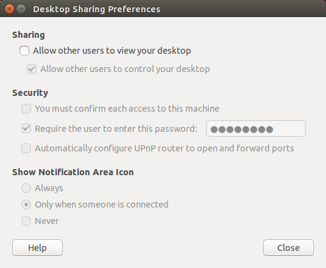
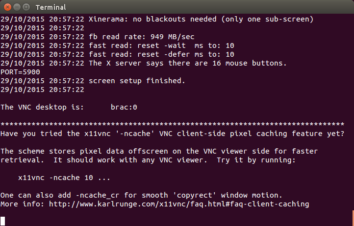
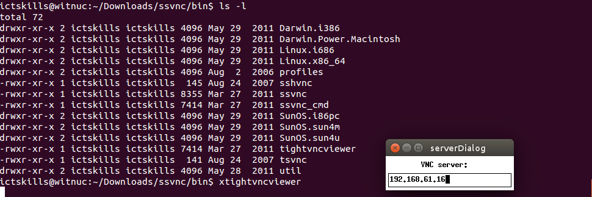
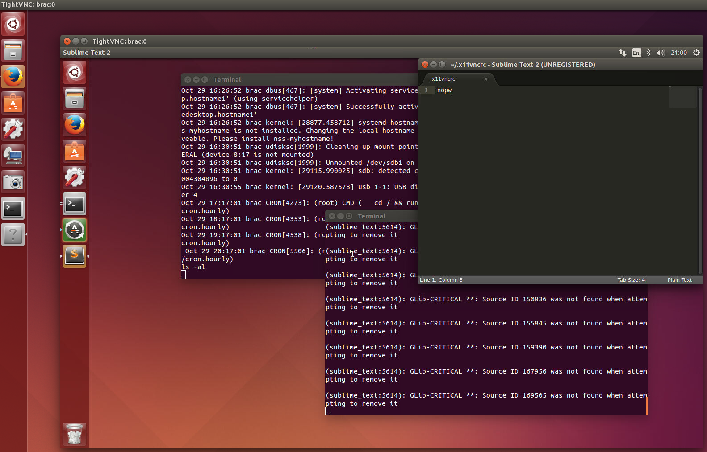

Configure and test virtual network
Huge array of remote desktop software exists.
In this lab we focus on Ubutu local and remote base installations.
Ubuntu comes packaged with
We shall use the default viewer but a different server, namely x11vnc for the following reasons:
Using Vino requires configuration using a GUI window on the server. We prefer to conduct any necessary configuration from the commandline.
x11vnc may be installed remotely, using, for example, ansible. Alternatively, it could be included in a customized install liveCD.
Most importantly, x11vnc can be configured remotely using ssh.
The following instructions apply to the remote computer.
Update and upgrade installed software:
apt-get update
apt-get upgrade
Install x11vnc server using following command:
apt-get install x11vnc
In your home folder, for example /home/ictskills, create .x11vncrc file with the following content, the purpose of which is to suppress spurious error messages and warnings:
nopw
Ensure that Sharing in Desktop Sharing Preferences is not enabled. See Figure 1.

The following instructions apply to the local computer.
Update and upgrade installed software:
apt-get update
apt-get upgrade
Install xtightvncviewer:
apt-get install xtightvncviewer
We use Method 2 technique described in the online article How to set up remote desktop sharing through SSH.
On the local computer run the equivalent for your machine of the following:
ssh -i ssh-private-key user@remote-ip -L 5900:localhost:5900 "x11vnc [-create] [-display :display number] -noxdamage"
See x11vnc documentation: x11vnc: a VNC server for real X displays.
Here is a specific example:
ssh -i ~/.ssh/ictskills_rsa ictskills@192.168.61.16 -L 5900:localhost:5900 "x11vnc -noxdamage"
This last command presumes:
In a separate terminal execute this command:
xtightvncviewer
and in the dialog that opens enter the remote server ip address, for example:
192.168.61.16
  
Where the remote machine is running Ubuntu server the above command becomes:
ssh -i ~/.ssh/ictskills_rsa ictskills@192.168.61.16 -L 5900:localhost:5900 "x11vnc -create -noxdamage"
ssh -i ~/.ssh/ictskills_rsa ictskills@192.168.61.16 -L 5900:localhost:5900 "x11vnc -noxdamage"
This last statement sets up ssh across which the remote terminal will be shared.
Now to launch the remote desktop:
xtightvncviewer
In the dialog box that appears enter the IP of the remote machine, for example:
192.168.61.16
The remote desktop should then launch as shown in Figure 4.
No issues.
Default is VGA 640 x 480 which is quite impossible to work with.
To resolve this do the following:
Install latest Virtual Box
In a terminal locate VBoxGuestAdditions.iso.
Here is the path in OSX (Mac):
/Applications/VirtualBox.app/Contents/MacOS/VBoxGuestAdditions.iso
Continue as follow:
sh ./VBoxLinuxAdditions.run
In order to fully update your guest system, open a terminal and run:
sudo apt-get update
sudo apt-get upgrade
sudo apt-get install dkms
Reboot system and set the appropriate screen resolution in the settings.
Alternatively, manually resize the display.
Here is a copy of Virtual Box manual: Oracle VMVirtualBox User Manual.
ssh -i ~/.ssh/ictskills_rsa ictskills@192.168.61.16 -L 5900:localhost:5900 "x11vnc -create -noxdamage"
sudo apt-get install x11vnc xorg openbox
sudo apt get install xvfb
Temporary fix:
sudo vi /etc/X11/Xwrapper.config
allowed_users=anybody